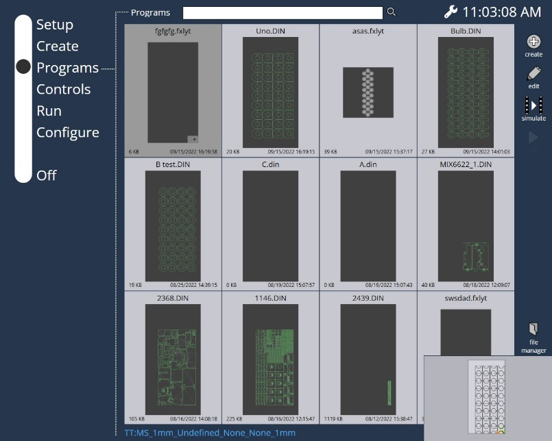

运行
程序选择器
选择程序并按运行键将用户导航到运行选项卡。程序名称、尺寸、NCR状态和激光参数（轴详情、速度、气体压力、功率、气体类型、喷嘴高度、焦距、当前工作坐标系、工具坐标系、使用的M功能）显示在顶部。
-
启动： 启动程序。
-
暂停： 暂停程序。此选项仅在用户启动程序时可用。
-
继续： 继续执行已暂停的程序。
-
停止或中止： 停止程序。
-
编辑： 编辑程序，导航到前面提到的程序编辑页面。

LST/布局程序显示如下：

DIN程序显示如下，

大多数信息都是不言自明的。右侧屏幕的参数 显示以下信息：
S: 工作偏移
T: 模具偏移值
M: 激活的M功能 如果离线编程输出程序运行时间，它将另外显示在主屏幕上。

运行时间 (NetProcessingTime)。 估计时间（请参阅离线编程的数据）。 更新当前活动信号程序的时间信息。一旦程序启动，时间计算将启动；新的程序启动时它将被重置。
速度倍率
用户可以使用倍率 + 和倍率 - 来影响 轴移动的速度（百分比）。
-
倍率 +： 增加配置/设置的轴或路径速度的倍率百分比。10%以上，数值以10%为增量变化，10%以下则以1%的增量变化。
-
倍率 -： 降低配置/设置的轴或路径速度的倍率百分比。10 ％以上，该值以10 ％的递减量变化，10 ％以下则以1%的递减量变化。用户还可以使用滑块增加或 降低速度。
当机床运行时，用户可以在不同的选项卡之间导航：
即使机床在忙着切割板材，用户也可能退出 运行 页面。这是必要的，因为在程序运行时， 操作员可能需要准备下一组程序（编辑程序，更改激光参数等）用于生产。此外，当 用户在程序运行时切换选项卡时，会显示一个迷你播放器 告知用户正在切割的程序的当前状态，而无需移动到 运行 选项卡。
